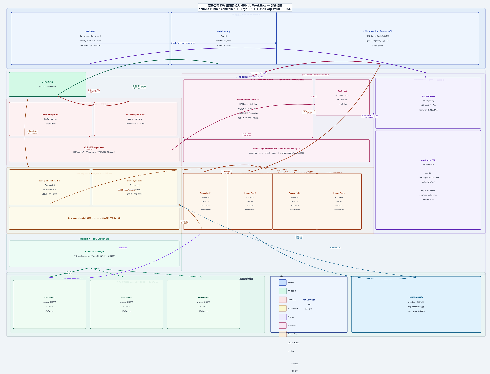

CI 基础设施部署架构说明¶
本文档面向参与开源，介绍项目 CI 流水线背后的自托管基础设施架构。 如需参与 CI 相关的维护或改造工作，请先阅读本文档以了解整体结构。
架构总览¶

上图展示了完整的部署架构，分为三个纵向职责域：
| 域 | 内容 | 职责 |
|---|---|---|
| 左栏 | Vault + infra-system + Device Plugin | 密钥管理 / 基础服务 / NPU 资源注册 |
| 中栏 | arc-system + arc-runners | ARC 控制器 + 动态 Runner Pod 执行面 |
| 右栏 | ArgoCD | GitOps 管控，负责 ARC HelmChart 同步 |
一、物理基础设施层¶
┌─────────────────────────────────────────────────────────────────┐
│ NPU 节点集群 (Ascend 910B/C × N) │ X86 CPU 节点 │ NFS │
└─────────────────────────────────────────────────────────────────┘
| 组件 | 规格 | 说明 |
|---|---|---|
| NPU 节点 | Ascend 910B/C，每节点 8 卡 | K8s 节点，用于承载 Runner Pod |
| X86 CPU 节点 | 16 核 | K8s 节点，同时运行管理面 Pod（Vault、ArgoCD 等） |
| NFS 共享存储 | - | 挂载到全部节点，提供模型权重、PyPI 缓存、构建目录 |
NFS 目录约定示例：
/models ← 模型权重（Runner 推理测试时读取）
/pip-cache ← PyPI 本地缓存（nginx-pypi-cache 挂载）
/workspace ← 构建临时目录
二、Kubernetes 集群¶
在上述物理节点上部署标准 K8s 集群：
- X86 CPU 节点，运行仅能支持X86的服务
- 全部 NPU 节点，用于调度 Runner Pod
2.1 Ascend Device Plugin（DaemonSet）¶
Device Plugin 以 DaemonSet 形式部署在全部 NPU Worker 节点，负责向 K8s 注册 NPU 扩展资源：
Runner Pod 通过该资源声明获得 NPU 算力分配。
三、基础服务（管理员直接部署）¶
以下服务由平台管理员通过 helm install 直接部署，不经由 ArgoCD 管理：
3.1 HashiCorp Vault（namespace: vault）¶
职责：加密存储所有敏感凭证，提供细粒度访问控制。
关键 KV 路径：
secret/github-arc/
├── github-app-id # GitHub App 的数字 ID
├── github-private-key # GitHub App 私钥（.pem 格式）
├── webhook-secret # Webhook 签名密钥
└── runner-token # 其他仓库级别密钥
注意：Vault Unseal Key 由平台管理员持有，不存储在任何版本控制系统中。
3.2 secrets-manager / ESO（namespace: infra-system）¶
职责：External Secrets Operator，周期性读取 Vault KV，自动在 arc-system namespace 中创建或刷新 K8s Secret。
Vault KV ──(ESO 读取)──► K8s Secret: github-arc-secret
│
└──► 注入到 ARC Controller Pod
3.3 imagepullsecret-patcher（namespace: infra-system）¶
职责：DaemonSet，监听 Namespace 创建事件，将私有镜像仓库的 imagePullSecret 自动同步到全部 Namespace（包括动态创建的 arc-runners），确保 Runner Pod 可正常拉取私有镜像。
3.4 nginx-pypi-cache（namespace: infra-system）¶
职责：PyPI 私有加速缓存服务，挂载 NFS /pip-cache 目录。
Runner Pod 通过环境变量使用本地缓存，避免每次 pip install 访问公网：
PIP_INDEX_URL=http://nginx-pypi-cache.infra-system.svc/simple
PIP_TRUSTED_HOST=nginx-pypi-cache.infra-system.svc
3.5 ArgoCD（namespace: argocd）¶
职责：GitOps 引擎，仅用于管理 actions-runner-controller 的部署（其自身由管理员直接部署）。
ArgoCD 持续监听 Git 仓库中 charts/arc/ 目录的 HelmChart 变更，自动同步部署到 K8s。
四、actions-runner-controller（ArgoCD 同步部署）¶
ARC 是唯一通过 ArgoCD 管理的组件，实现 GitOps 受控升级。
4.1 架构组成¶
namespace: arc-system
├── actions-runner-controller (Deployment) ← 控制器
├── K8s Secret: github-arc-secret ← 由 ESO 从 Vault 同步
└── AutoscalingRunnerSet (CRD) ← Runner 规格定义
namespace: arc-runners
└── Runner Pod-1 / Pod-2 / ... / Pod-N ← Ephemeral，按需创建
4.2 工作模式（Scale Sets）¶
ARC 采用 Scale Sets 模式（v0.5+ 推荐），工作流程如下：
开发者 push/PR
│
▼ ⑪ 触发 workflow（runs-on: npu-runner）
GitHub Actions Service（Job Queue）
│
▼ ⑫ Job 分发给匹配的 Runner Scale Set
ARC Controller（arc-system）
│ ⑬ 检测到 Job，按 AutoscalingRunnerSet 规格
▼ 动态创建 Ephemeral Runner Pod
Runner Pod（arc-runners）
│ ⑭ 注册为 Runner → 拉取 Job → 执行 Steps → 上报结果
▼
Job 完成 → Runner Pod 自动销毁
五、GitHub App 集成¶
六、完整部署时序¶
以下为从零开始的推荐部署顺序：
阶段 1：物理层 & K8s
1. 准备 NPU 节点 + X86 节点 + NFS 存储
2. 搭建 K8s 集群（X86，NPU 节点）
3. 部署 Ascend Device Plugin（DaemonSet）
阶段 2：基础服务（直接 helm install，顺序无强依赖）
4. helm install vault # 先于 ESO，否则 ESO 无 Backend
5. helm install argocd # 先于 ARC，否则无法同步
6. helm install external-secrets # secrets-manager / ESO
7. helm install imagepullsecret-patcher
8. helm install nginx-pypi-cache # 需要 NFS PVC 就绪
阶段 3：凭证配置
9. 在开源仓安装 GitHub App，获取 App ID + Private Key
10. 将凭证录入 Vault KV（vault kv put secret/github-arc/ ...）
11. ESO ExternalSecret CR 创建后，自动同步 K8s Secret
阶段 4：ArgoCD 同步 ARC
12. 在 ArgoCD 中创建 Application（指向 charts/arc/）
13. ArgoCD 自动同步，部署 ARC Controller 到 arc-system
14. ARC 读取 K8s Secret，完成向 GitHub Actions Service 注册
阶段 5：仓库配置
15. 在 .github/workflows/*.yaml 中使用 Runner：
runs-on: [self-hosted, npu-runner]
七、贡献者须知¶
7.1 如何触发 NPU CI¶
在 PR 的 workflow 文件中指定 Runner 标签：
jobs:
npu-test:
runs-on: [self-hosted, npu-runner]
steps:
- uses: actions/checkout@v4
- name: Run NPU tests
run: pytest tests/e2e/ -v
7.2 Runner Pod 的环境约定¶
每个 Runner Pod 启动时具备以下环境：
| 资源 / 环境 | 值 | 说明 |
|---|---|---|
| NPU 卡数 | 8 × Ascend 910B/C | 通过 Device Plugin 分配 |
/models |
NFS 挂载 | 预置模型权重，无需每次下载 |
PIP_INDEX_URL |
nginx-pypi-cache | pip 走本地缓存，加速依赖安装 |
| Runner 生命周期 | Ephemeral | Job 完成后 Pod 自动销毁，环境完全隔离 |
7.3 安全边界¶
- Vault 凭证不暴露：所有敏感凭证存储在 Vault，通过 ESO 注入，不出现在 Git 仓库或 Pod 环境变量明文中
- Runner 隔离：每个 Job 使用独立的 Ephemeral Pod，Job 间无状态共享
- 镜像来源受控：imagepullsecret-patcher 确保只有授权的私有镜像仓库凭证被使用
- GitOps 变更可审计：ARC 版本变更通过 Git PR → ArgoCD 同步，全程留有审计记录
7.4 常见问题¶
Q：Runner 长时间 Pending，Job 未执行？
可能原因：
1. ARC Controller 未成功向 GitHub Actions Service 注册（检查 K8s Secret 是否同步）
2. NPU 节点资源不足（检查 kubectl describe node）
3. imagepullsecret-patcher 未同步，导致 Runner Pod 镜像拉取失败
Q：pip install 速度很慢？
检查 PIP_INDEX_URL 环境变量是否指向 nginx-pypi-cache 服务，以及 NFS /pip-cache 是否正常挂载。